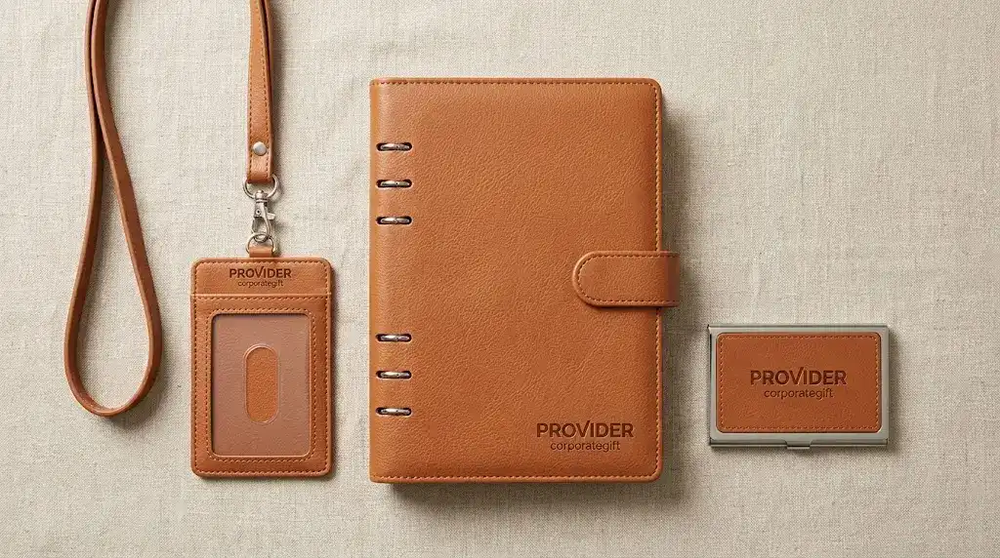

Seminarkit ID memproduksi merchandise kantor ramah lingkungan premium yang memadukan kelestarian alam dan estetika mewah guna mendukung ketercapaian target program ESG korporat.
Botol Minum Baja Nirkarat Berlapis Bambu Alami untuk Kampanye Keberlanjutan
Botol minum baja nirkarat berlapis bambu alami Seminarkit ID menawarkan insulasi suhu minuman optimal dengan tampilan serat kayu alami yang unik.
Pengurangan sampah plastik di lingkungan kerja dapat dipelopori secara nyata melalui penyediaan wadah minum berdesain eksklusif bagi staf dan mitra bisnis.
Bagian dalam botol ini menggunakan baja tahan karat kelas medis SUS 304 yang higienis, sedangkan dinding luar dibalut kayu bambu alami yang dipoles menggunakan minyak nabati alami.
Insulasi vakum di antara kedua dinding tersebut mampu mempertahankan temperatur air dingin hingga 20 jam dan minuman panas hingga 12 jam.
Sifat serat bambu yang unik memastikan bahwa setiap botol memiliki corak urat kayu yang tidak pernah sama persis, memberikan kesan cinderamata yang sangat istimewa bagi setiap penerima.
Botol ini juga dilengkapi saringan teh lepasan berbahan baja tahan karat pada bagian mulut botol untuk kemudahan menyeduh minuman herbal di ruang kerja.
Penandaan identitas merek diaplikasikan menggunakan teknologi grafir laser langsung pada permukaan kulit bambu.
Proses ini tidak menggunakan zat pewarna kimia sintetis sama sekali, menghasilkan warna logo cokelat gelap alami yang menyatu indah dengan tekstur kayu dan tidak akan pudar akibat kelembapan.
Tas Jinjing Kanvas Katun Tebal Daur Ulang untuk Perlengkapan Acara
Tas jinjing kanvas katun tebal Seminarkit ID menghadirkan solusi tas serbaguna berkekuatan tinggi yang dapat menggantikan penggunaan kantong plastik secara permanen.
Kebutuhan wadah pembawa dokumen dan laptop saat menghadiri lokakarya atau pertemuan kerja dapat dipenuhi dengan tas jinjing berbahan kanvas bermutu tinggi.
Tas ini ditenun menggunakan benang katun daur ulang berbobot 14 ons yang rapat, tebal, dan mampu menahan beban barang hingga 12 kilogram tanpa perubahan struktur serat.
Bagian dasar tas dibuat melebar untuk memberikan ruang tampung ekstra bagi berkas map dan perangkat elektronik.
Tali pegangan dijahit menyilang dengan penguat jahitan ganda di bagian tepi dalam, memberikan kenyamanan saat disampirkan di bahu tanpa menimbulkan rasa sakit.
Bagian dalam tas dilengkapi saku gantung beritsleting untuk mengamankan barang berharga berukuran kecil seperti kunci kendaraan atau ponsel pintar.
Pencetakan logo korporat pada permukaan kanvas menggunakan tinta sablon berbahan dasar air yang bebas dari senyawa logam berat dan telah tersertifikasi ramah lingkungan.
Hasil cetakan meresap ke dalam pori-pori kain, menghasilkan gambar beresolusi tinggi yang tahan dicuci berkali-kali tanpa risiko retak.

Ilustrasi binder dan tempat id card kulit.
Buku Catatan Sampul Serat Gabus Alami untuk Sarana Diskusi Hijau
Buku catatan serat gabus alami Seminarkit ID menyajikan sarana tulis manajerial dengan tekstur empuk alami dan lembaran kertas hasil daur ulang bersertifikasi.
Sampul buku agenda ini memanfaatkan kulit pohon ek gabus yang dipanen secara berkala tanpa perlu menebang pohon induknya, menjadikannya salah satu bahan paling lestari di dunia manufaktur.
Tekstur gabus memberikan sentuhan empuk alami yang tahan terhadap percikan air dan tidak mudah sobek.
Karakteristik bahan gabus yang lentur membuat buku agenda nyaman digenggam saat dibawa berpindah ruang pertemuan.
Kertas isi bagian dalam menggunakan kertas daur ulang berbobot 80 gram dengan sertifikasi kelestarian hutan internasional yang menjamin bahan baku kertas berasal dari hutan tanaman industri yang dikelola secara bertanggung jawab.
Kertas ini memiliki warna krem hangat yang mereduksi ketegangan mata saat menulis di bawah cahaya lampu kantor dalam durasi lama.
Pemberian logo identitas perusahaan dikerjakan menggunakan teknik cetak blind deboss atau grafir mikro, memperlihatkan cekungan pola merek yang artistik di tengah butiran tekstur gabus alami.
Cinderamata ini menjadi media komunikasi nyata atas komitmen hijau korporat kepada para pemegang saham.
Set Perlengkapan Alat Tulis Kayu Terbarukan untuk Meja Kerja Modern
Set alat tulis kayu terbarukan Seminarkit ID memadukan fungsi pena tinta gel berbadan bambu dan penggaris kayu terstandarisasi di dalam kotak penyimpanan terpadu.
Pena berbadan bambu ini dirancang dengan mekanisme putar kuningan yang halus dan menggunakan isi ulang tinta gel berstandar universal yang mudah diganti saat habis, menghindarkan pembuangan selongsong pena bekas.
Bobot pena didistribusikan secara berimbang menuju ujung tulisan, memberikan kestabilan mekanis saat digunakan untuk menulis notula rapat yang panjang.
Kotak pembungkusnya terbuat dari papan kayu pinus daur ulang yang dirangkai tanpa lem sintetis berbahaya, dilengkapi penutup geser yang rapat dan rapi.
Seluruh permukaan kayu dihaluskan melalui pengamplasan mikro bertahap sehingga tidak menyisakan serat tajam yang dapat membahayakan pengguna.
Branding korporat dapat disematkan serentak pada badan pena dan penutup kotak penyimpanan melalui satu tarikan ukiran laser halus.
Paket instrumen meja ini menyuguhkan harmoni antara kelestarian lingkungan dan fungsionalitas kerja prima di meja pimpinan.
Konsultasikan Pengadaan Merchandise Berkelanjutan di Seminarkit ID
Pesan dari Seminarkit ID sekarang untuk mendapatkan pilihan merchandise kantor ramah lingkungan premium yang mendukung target keberlanjutan dan inisiatif ESG perusahaan Anda.
Kami menyediakan kurasi cinderamata ramah bumi terbaik dengan keaslian spesifikasi material, pengerjaan penandaan merek berstandar tinggi, dan sistem pengiriman yang aman ke kantor Anda.
Hubungi tim konsultan B2B Seminarkit ID hari ini untuk memperoleh visualisasi desain gratis serta katalog penawaran pengadaan korporat yang berdampak positif bagi masa depan lingkungan.
Untuk melengkapi kebutuhan cinderamata korporat dan kegiatan perusahaan Anda lainnya, Anda juga dapat membaca referensi souvenir seminar kit premium kulit sintetis, ulasan souvenir gathering kantor custom logo, ulasan corporate gift premium Yogyakarta, serta rekomendasi plakat penghargaan custom.
FAQ Seputar Merchandise Kantor Ramah Lingkungan Premium
Mengapa perusahaan perlu beralih ke produk merchandise kantor ramah lingkungan premium?
Beralih ke merchandise ramah lingkungan premium memperkuat komitmen nyata perusahaan terhadap target program Environmental, Social, and Governance (ESG) serta inisiatif keberlanjutan. Cinderamata ramah bumi berdesain mewah mengurangi jejak karbon kantor, meniadakan penggunaan plastik sekali pakai, sekaligus meningkatkan reputasi brand di mata mitra strategis dan pemangku kepentingan.
Apa saja pilihan cinderamata berkelanjutan yang memiliki tampilan mewah dan fungsional?
Pilihan utama mencakup botol minum baja nirkarat SUS 304 berlapis bambu alami berinsulasi vakum, tas jinjing kanvas katun daur ulang 14 ons dengan sablon water-based bersertifikasi, buku catatan sampul serat gabus alami pohon ek dengan kertas daur ulang berstandar kelestarian hutan, serta set alat tulis kayu pinus dan pena bambu isi ulang universal.
Bagaimana Seminarkit ID menjamin keaslian material ramah lingkungan pada produk souvenir?
Seminarkit ID menjamin keaslian material melalui seleksi bahan baku terverifikasi, seperti penggunaan baja tahan karat SUS 304 food-grade, serat bambu alami tanpa pewarna sintetis, kertas daur ulang bersertifikasi FSC, serta tinta sablon water-based bebas logam berat. Setiap produk dikerjakan dengan proses finishing ramah lingkungan seperti ukiran laser langsung dan blind deboss.
Lihat juga: Souvenir Seminar Kit Premium Kulit Sintetis, Souvenir Gathering Kantor Custom Logo, Corporate Gift Premium Yogyakarta, dan Plakat Penghargaan Custom.